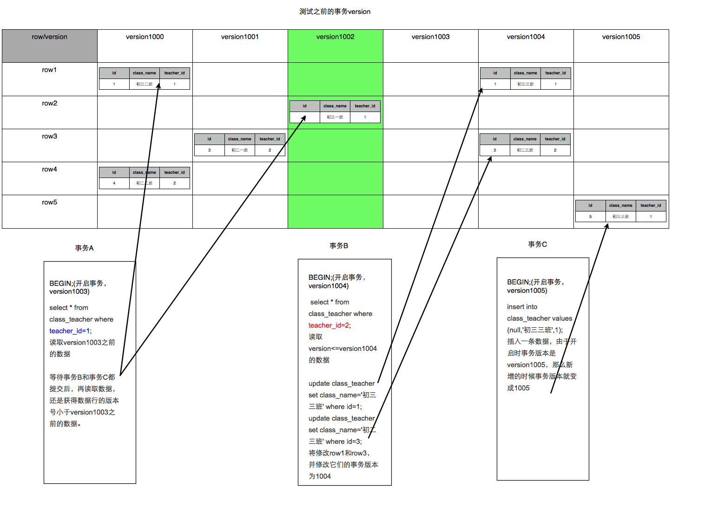
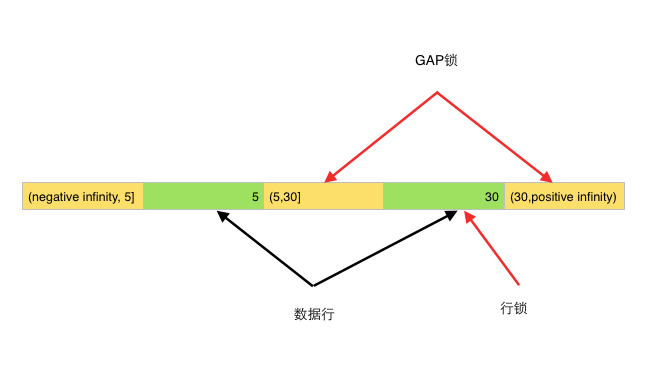

前言:
我们都知道事务的几种性质，数据库为了维护这些性质，尤其是一致性和隔离性，一般使用加锁这种方式。同时数据库又是个高并发的应用，同一时间会有大量的并发访问，如果加锁过度，会极大的降低并发处理能力。所以对于加锁的处理，可以说就是数据库对于事务处理的精髓所在。这里通过分析MySQL中InnoDB引擎的加锁机制，来抛砖引玉，让读者更好的理解，在事务处理中数据库到底做了什么。
#一次封锁or两段锁？
因为有大量的并发访问，为了预防死锁，一般应用中推荐使用一次封锁法，就是在方法的开始阶段，已经预先知道会用到哪些数据，然后全部锁住，在方法运行之后，再全部解锁。这种方式可以有效的避免循环死锁，但在数据库中却不适用，因为在事务开始阶段，数据库并不知道会用到哪些数据。
数据库遵循的是两段锁协议，将事务分成两个阶段，加锁阶段和解锁阶段（所以叫两段锁）
| 事务 | 加锁/解锁处理 |
|---|---|
| begin； | |
| insert into test ..... | 加insert对应的锁 |
| update test set... | 加update对应的锁 |
| delete from test .... | 加delete对应的锁 |
| commit; | 事务提交时，同时释放insert、update、delete对应的锁 |
这种方式虽然无法避免死锁，但是两段锁协议可以保证事务的并发调度是串行化（串行化很重要，尤其是在数据恢复和备份的时候）的。
#事务中的加锁方式
##事务的四种隔离级别
在数据库操作中，为了有效保证并发读取数据的正确性，提出的事务隔离级别。我们的数据库锁，也是为了构建这些隔离级别存在的。
| 隔离级别 | 脏读（Dirty Read） | 不可重复读（NonRepeatable Read） | 幻读（Phantom Read） |
|---|---|---|---|
| 未提交读（Read uncommitted） | 可能 | 可能 | 可能 |
| 已提交读（Read committed） | 不可能 | 可能 | 可能 |
| 可重复读（Repeatable read） | 不可能 | 不可能 | 可能 |
| 可串行化（Serializable ） | 不可能 | 不可能 | 不可能 |
Read Uncommitted这种级别，数据库一般都不会用，而且任何操作都不会加锁，这里就不讨论了。
##MySQL中锁的种类
MySQL中锁的种类很多，有常见的表锁和行锁，也有新加入的Metadata Lock等等,表锁是对一整张表加锁，虽然可分为读锁和写锁，但毕竟是锁住整张表，会导致并发能力下降，一般是做ddl处理时使用。
行锁则是锁住数据行，这种加锁方法比较复杂，但是由于只锁住有限的数据，对于其它数据不加限制，所以并发能力强，MySQL一般都是用行锁来处理并发事务。这里主要讨论的也就是行锁。
###Read Committed（读取提交内容）
在RC级别中，数据的读取都是不加锁的，但是数据的写入、修改和删除是需要加锁的。效果如下
MySQL> show create table class_teacher \G\
Table: class_teacher
Create Table: CREATE TABLE `class_teacher` (
`id` int(11) NOT NULL AUTO_INCREMENT,
`class_name` varchar(100) COLLATE utf8mb4_unicode_ci NOT NULL,
`teacher_id` int(11) NOT NULL,
PRIMARY KEY (`id`),
KEY `idx_teacher_id` (`teacher_id`)
) ENGINE=InnoDB AUTO_INCREMENT=5 DEFAULT CHARSET=utf8mb4 COLLATE=utf8mb4_unicode_ci
1 row in set (0.02 sec)
MySQL> select * from class_teacher;
+----+--------------+------------+
| id | class_name | teacher_id |
+----+--------------+------------+
| 1 | 初三一班 | 1 |
| 3 | 初二一班 | 2 |
| 4 | 初二二班 | 2 |
+----+--------------+------------+
由于MySQL的InnoDB默认是使用的RR级别，所以我们先要将该session开启成RC级别，并且设置binlog的模式
SET session transaction isolation level read committed;
SET SESSION binlog_format = 'ROW';（或者是MIXED）
| 事务A | 事务B |
|---|---|
| begin; | begin; |
| update class_teacher set class_name='初三二班' where teacher_id=1; | update class_teacher set class_name='初三三班' where teacher_id=1; |
| ERROR 1205 (HY000): Lock wait timeout exceeded; try restarting transaction | |
| commit; |
为了防止并发过程中的修改冲突，事务A中MySQL给teacher_id=1的数据行加锁，并一直不commit（释放锁），那么事务B也就一直拿不到该行锁，wait直到超时。
这时我们要注意到，teacher_id是有索引的，如果是没有索引的class_name呢？update class_teacher set teacher_id=3 where class_name = '初三一班';
那么MySQL会给整张表的所有数据行的加行锁。这里听起来有点不可思议，但是当sql运行的过程中，MySQL并不知道哪些数据行是 class_name = '初三一班'的（没有索引嘛），如果一个条件无法通过索引快速过滤，存储引擎层面就会将所有记录加锁后返回，再由MySQL Server层进行过滤。
但在实际使用过程当中，MySQL做了一些改进，在MySQL Server过滤条件，发现不满足后，会调用unlock_row方法，把不满足条件的记录释放锁 (违背了二段锁协议的约束)。这样做，保证了最后只会持有满足条件记录上的锁，但是每条记录的加锁操作还是不能省略的。可见即使是MySQL，为了效率也是会违反规范的。（参见《高性能MySQL》中文第三版p181）
这种情况同样适用于MySQL的默认隔离级别RR。所以对一个数据量很大的表做批量修改的时候，如果无法使用相应的索引，MySQL Server过滤数据的的时候特别慢，就会出现虽然没有修改某些行的数据，但是它们还是被锁住了的现象。
###Repeatable Read（可重读）
这是MySQL中InnoDB默认的隔离级别。我们姑且分“读”和“写”两个模块来讲解。
####读
读就是可重读，可重读这个概念是一事务的多个实例在并发读取数据时，会看到同样的数据行，有点抽象，我们来看一下效果。
RC（不可重读）模式下的展现
| 事务A | 事务B | |||||||||
|---|---|---|---|---|---|---|---|---|---|---|
| begin; | begin; | |||||||||
select id,class_name,teacher_id from class_teacher where teacher_id=1;
| ||||||||||
update class_teacher set class_name='初三三班' where id=1; | ||||||||||
| commit; | ||||||||||
select id,class_name,teacher_id from class_teacher where teacher_id=1;
读到了事务B修改的数据，和第一次查询的结果不一样，是不可重读的。 | ||||||||||
| commit; |
事务B修改id=1的数据提交之后，事务A同样的查询，后一次和前一次的结果不一样，这就是不可重读（重新读取产生的结果不一样）。这就很可能带来一些问题，那么我们来看看在RR级别中MySQL的表现：
| 事务A | 事务B | 事务C | |||||||||
|---|---|---|---|---|---|---|---|---|---|---|---|
| begin; | begin; | begin; | |||||||||
select id,class_name,teacher_id from class_teacher where teacher_id=1;
| |||||||||||
update class_teacher set class_name='初三三班' where id=1; commit; | |||||||||||
| insert into class_teacher values (null,'初三三班',1);commit; | |||||||||||
select id,class_name,teacher_id from class_teacher where teacher_id=1;
没有读到事务B修改的数据，和第一次sql读取的一样，是可重复读的。 没有读到事务C新添加的数据。 | |||||||||||
| commit; |
我们注意到，当teacher_id=1时，事务A先做了一次读取，事务B中间修改了id=1的数据，并commit之后，事务A第二次读到的数据和第一次完全相同。所以说它是可重读的。那么MySQL是怎么做到的呢？这里姑且卖个关子，我们往下看。
####不可重复读和幻读的区别####
很多人容易搞混不可重复读和幻读，确实这两者有些相似。但不可重复读重点在于update和delete，而幻读的重点在于insert。
如果使用锁机制来实现这两种隔离级别，在可重复读中，该sql第一次读取到数据后，就将这些数据加锁，其它事务无法修改这些数据，就可以实现可重复读了。但这种方法却无法锁住insert的数据，所以当事务A先前读取了数据，或者修改了全部数据，事务B还是可以insert数据提交，这时事务A就会发现莫名其妙多了一条之前没有的数据，这就是幻读，不能通过行锁来避免。需要Serializable隔离级别 ，读用读锁，写用写锁，读锁和写锁互斥，这么做可以有效的避免幻读、不可重复读、脏读等问题，但会极大的降低数据库的并发能力。
所以说不可重复读和幻读最大的区别，就在于如何通过锁机制来解决他们产生的问题。
上文说的，是使用悲观锁机制来处理这两种问题，但是MySQL、ORACLE、PostgreSQL等成熟的数据库，出于性能考虑，都是使用了以乐观锁为理论基础的MVCC（多版本并发控制）来避免这两种问题。
####悲观锁和乐观锁####
正如其名，它指的是对数据被外界（包括本系统当前的其他事务，以及来自外部系统的事务处理）修改持保守态度，因此，在整个数据处理过程中，将数据处于锁定状态。悲观锁的实现，往往依靠数据库提供的锁机制（也只有数据库层提供的锁机制才能真正保证数据访问的排他性，否则，即使在本系统中实现了加锁机制，也无法保证外部系统不会修改数据）。
在悲观锁的情况下，为了保证事务的隔离性，就需要一致性锁定读。读取数据时给加锁，其它事务无法修改这些数据。修改删除数据时也要加锁，其它事务无法读取这些数据。
相对悲观锁而言，乐观锁机制采取了更加宽松的加锁机制。悲观锁大多数情况下依靠数据库的锁机制实现，以保证操作最大程度的独占性。但随之而来的就是数据库性能的大量开销，特别是对长事务而言，这样的开销往往无法承受。
而乐观锁机制在一定程度上解决了这个问题。乐观锁，大多是基于数据版本（ Version ）记录机制实现。何谓数据版本？即为数据增加一个版本标识，在基于数据库表的版本解决方案中，一般是通过为数据库表增加一个 “version” 字段来实现。读取出数据时，将此版本号一同读出，之后更新时，对此版本号加一。此时，将提交数据的版本数据与数据库表对应记录的当前版本信息进行比对，如果提交的数据版本号大于数据库表当前版本号，则予以更新，否则认为是过期数据。
要说明的是，MVCC的实现没有固定的规范，每个数据库都会有不同的实现方式，这里讨论的是InnoDB的MVCC。
####MVCC在MySQL的InnoDB中的实现
在InnoDB中，会在每行数据后添加两个额外的隐藏的值来实现MVCC，这两个值一个记录这行数据何时被创建，另外一个记录这行数据何时过期（或者被删除）。 在实际操作中，存储的并不是时间，而是事务的版本号，每开启一个新事务，事务的版本号就会递增。 在可重读Repeatable reads事务隔离级别下：
通过MVCC，虽然每行记录都需要额外的存储空间，更多的行检查工作以及一些额外的维护工作，但可以减少锁的使用，大多数读操作都不用加锁，读数据操作很简单，性能很好，并且也能保证只会读取到符合标准的行，也只锁住必要行。
我们不管从数据库方面的教课书中学到，还是从网络上看到，大都是上文中事务的四种隔离级别这一模块列出的意思，RR级别是可重复读的，但无法解决幻读，而只有在Serializable级别才能解决幻读。于是我就加了一个事务C来展示效果。在事务C中添加了一条teacher_id=1的数据commit，RR级别中应该会有幻读现象，事务A在查询teacher_id=1的数据时会读到事务C新加的数据。但是测试后发现，在MySQL中是不存在这种情况的，在事务C提交后，事务A还是不会读到这条数据。可见在MySQL的RR级别中，是解决了幻读的读问题的。参见下图

读问题解决了，根据MVCC的定义，并发提交数据时会出现冲突，那么冲突时如何解决呢？我们再来看看InnoDB中RR级别对于写数据的处理。
####“读”与“读”的区别
可能有读者会疑惑，事务的隔离级别其实都是对于读数据的定义，但到了这里，就被拆成了读和写两个模块来讲解。这主要是因为MySQL中的读，和事务隔离级别中的读，是不一样的。
我们且看，在RR级别中，通过MVCC机制，虽然让数据变得可重复读，但我们读到的数据可能是历史数据，是不及时的数据，不是数据库当前的数据！这在一些对于数据的时效特别敏感的业务中，就很可能出问题。
对于这种读取历史数据的方式，我们叫它快照读 (snapshot read)，而读取数据库当前版本数据的方式，叫当前读 (current read)。很显然，在MVCC中：
事务的隔离级别实际上都是定义了当前读的级别，MySQL为了减少锁处理（包括等待其它锁）的时间，提升并发能力，引入了快照读的概念，使得select不用加锁。而update、insert这些“当前读”，就需要另外的模块来解决了。
###写（"当前读"）
事务的隔离级别中虽然只定义了读数据的要求，实际上这也可以说是写数据的要求。上文的“读”，实际是讲的快照读；而这里说的“写”就是当前读了。
为了解决当前读中的幻读问题，MySQL事务使用了Next-Key锁。
####Next-Key锁
Next-Key锁是行锁和GAP（间隙锁）的合并，行锁上文已经介绍了，接下来说下GAP间隙锁。
行锁可以防止不同事务版本的数据修改提交时造成数据冲突的情况。但如何避免别的事务插入数据就成了问题。我们可以看看RR级别和RC级别的对比
RC级别：
| 事务A | 事务B | |||||||||
|---|---|---|---|---|---|---|---|---|---|---|
| begin; | begin; | |||||||||
| select id,class_name,teacher_id from class_teacher where teacher_id=30;
| ||||||||||
| update class_teacher set class_name='初三四班' where teacher_id=30; |
| |||||||||
|
| insert into class_teacher values (null,'初三二班',30); commit; | |||||||||
| select id,class_name,teacher_id from class_teacher where teacher_id=30;
|
RR级别：
| 事务A | 事务B | ||||||
|---|---|---|---|---|---|---|---|
| begin; | begin; | ||||||
| select id,class_name,teacher_id from class_teacher where teacher_id=30;
| |||||||
| update class_teacher set class_name='初三四班' where teacher_id=30; |
| ||||||
|
| insert into class_teacher values (null,'初三二班',30); waiting.... | ||||||
| select id,class_name,teacher_id from class_teacher where teacher_id=30;
| |||||||
| commit; | 事务Acommit后，事务B的insert执行。 |
通过对比我们可以发现，在RC级别中，事务A修改了所有teacher_id=30的数据，但是当事务Binsert进新数据后，事务A发现莫名其妙多了一行teacher_id=30的数据，而且没有被之前的update语句所修改，这就是“当前读”的幻读。
RR级别中，事务A在update后加锁，事务B无法插入新数据，这样事务A在update前后读的数据保持一致，避免了幻读。这个锁，就是Gap锁。
MySQL是这么实现的：
在class_teacher这张表中，teacher_id是个索引，那么它就会维护一套B+树的数据关系，为了简化，我们用链表结构来表达（实际上是个树形结构，但原理相同）

如图所示，InnoDB使用的是聚集索引，teacher_id身为二级索引，就要维护一个索引字段和主键id的树状结构（这里用链表形式表现），并保持顺序排列。
Innodb将这段数据分成几个个区间
update class_teacher set class_name='初三四班' where teacher_id=30;不仅用行锁，锁住了相应的数据行；同时也在两边的区间，（5,30]和（30，positive infinity），都加入了gap锁。这样事务B就无法在这个两个区间insert进新数据。
受限于这种实现方式，Innodb很多时候会锁住不需要锁的区间。如下所示：
| 事务A | 事务B | 事务C | |||||||||
|---|---|---|---|---|---|---|---|---|---|---|---|
| begin; | begin; | begin; | |||||||||
| select id,class_name,teacher_id from class_teacher;
| |||||||||||
| update class_teacher set class_name='初一一班' where teacher_id=20; | |||||||||||
| insert into class_teacher values (null,'初三五班',10); waiting ..... | insert into class_teacher values (null,'初三五班',40); | ||||||||||
| commit; | 事务A commit之后，这条语句才插入成功 | commit; | |||||||||
| commit; |
update的teacher_id=20是在(5，30]区间，即使没有修改任何数据，Innodb也会在这个区间加gap锁，而其它区间不会影响，事务C正常插入。
如果使用的是没有索引的字段，比如update class_teacher set teacher_id=7 where class_name='初三八班（即使没有匹配到任何数据）',那么会给全表加入gap锁。同时，它不能像上文中行锁一样经过MySQL Server过滤自动解除不满足条件的锁，因为没有索引，则这些字段也就没有排序，也就没有区间。除非该事务提交，否则其它事务无法插入任何数据。
行锁防止别的事务修改或删除，GAP锁防止别的事务新增，行锁和GAP锁结合形成的的Next-Key锁共同解决了RR级别在写数据时的幻读问题。
###Serializable
这个级别很简单，读加共享锁，写加排他锁，读写互斥。使用的悲观锁的理论，实现简单，数据更加安全，但是并发能力非常差。如果你的业务并发的特别少或者没有并发，同时又要求数据及时可靠的话，可以使用这种模式。
这里要吐槽一句，不要看到select就说不会加锁了，在Serializable这个级别，还是会加锁的！